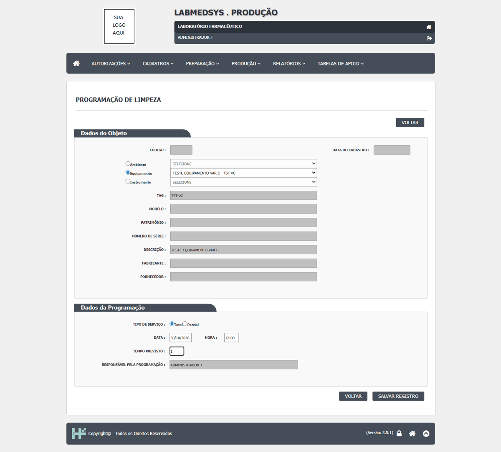
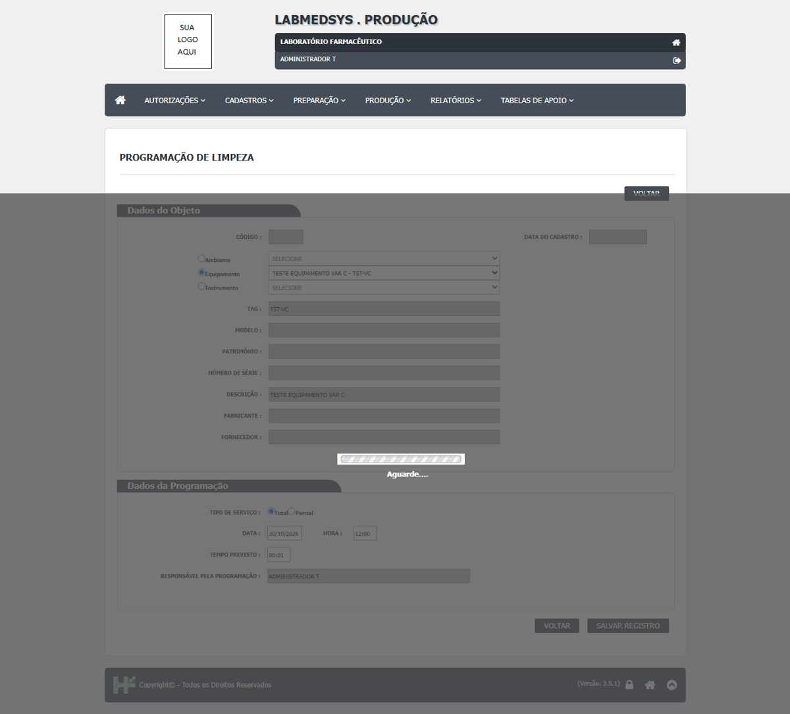
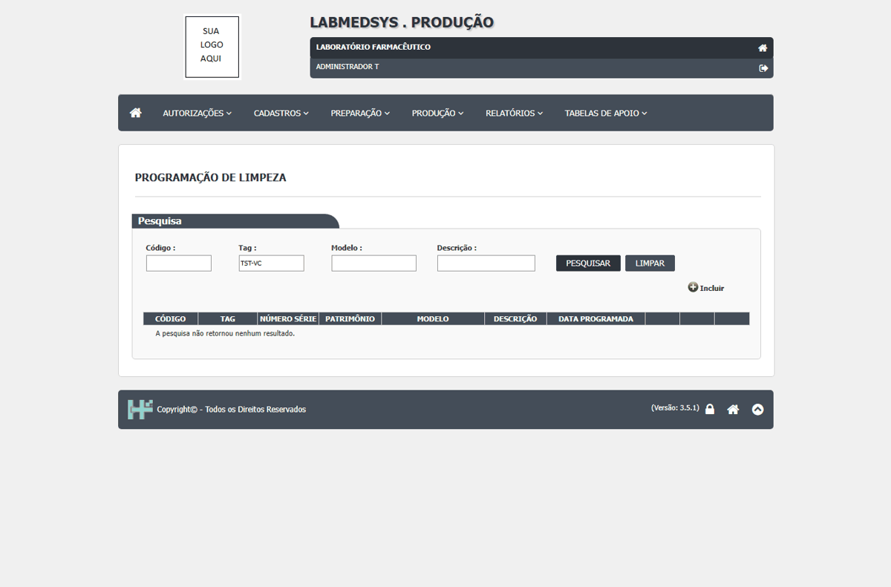

DV-PRO-003 · Programação de Limpeza não conclui a gravação
Ao programar limpeza para o equipamento TESTE EQUIPAMENTO VAR C, o postback permaneceu com a indicação de espera e a consulta filtrada pela tag TST-VC não encontrou a programação, mesmo após conferir os campos de data e hora. Não há registro confirmado.
Como reproduzir o erro, passo a passo
- Abrir Produção > Preparação > Programação de Limpeza pelo menu.
- Selecionar o tipo Equipamento e TESTE EQUIPAMENTO VAR C - TST-VC.
- Selecionar serviço Total, informar data 30/10/2026, hora 12:00 e tempo previsto 00:01.
- Clicar em Salvar e consultar novamente a lista pela tag TST-VC.
Esperado
A programação deve concluir e aparecer na lista de Programação de Limpeza.
Obtido
A tela permaneceu em espera; a lista filtrada respondeu que a pesquisa não retornou nenhum resultado.
Evidência (captura da tela)


